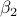

Yushun Zhang
About meI'm a Ph.D student in School of Data Science at the Chinese University of Hong Kong, Shenzhen, China. I'm honorable to be advised by Prof. Zhi-Quan Luo. I’m also very fortunate to work closely with Prof. Ruoyu Sun (UIUC). Previously, I did my undergraduate study in the Department of Mathematics at Southern University of Science and Technology (SUSTech). My research focuses on optimization and deep learning. PreprintsAdam Can Converge with Proper and  Publications(*: Equal contribution, alphabetically ordered.) Does Adam Converge and When? HyperDQN: A Randomized Exploration Method for Deep Reinforcement Learning When Expressivity Meets Trainability: Fewer than n Neurons Can Work Fast QLB algorithm and hypothesis tests in logistic model for ophthalmologic bilateral correlated data AwardsBest Presentation Award (1st place), 3rd Tsinghua-Berkeley workshop on Learning Theory, 2021 Magna cum laude of SUSTech, 2019 Outstanding graduation thesis, SUSTech, 2019 Scholarship Award for Excellence, Mathematics department, SUSTech (top 10 students) , 2018 ServicesReviewer for NeurIPS, ICML, AISTATS ExperiencesI spent a great time as a exchange undergraduate student at Mathematics department, UC San Diego, 2019 Spring. CVView my curriculum vitae here. |